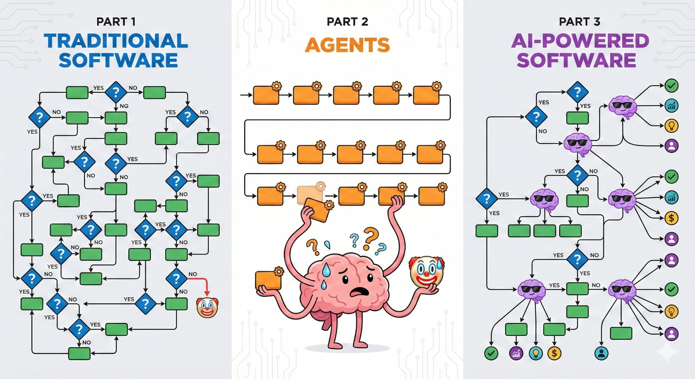
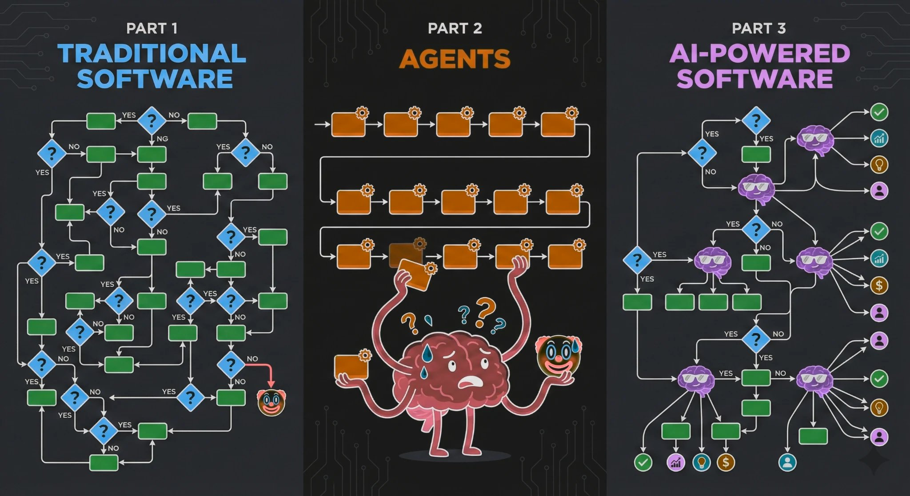

如何使用 TypeSafe 进行构建
通过让代码保持控制权，并让 System One 只做狭窄、结构化的决策，来设计 AI 驱动的软件。
System One 是 TypeSafe 用于构建 AI 驱动的软件（而非智能体）的模型。它不生成代码，也不自行选择下一步动作。它提供可嵌入软件的 AI 原语，让代码始终保持控制权，而由模型负责对非结构化数据做出常识性判断。
概要： 先构建正常的软件工作流，只在需要 AI 的地方插入 System One。
把控制流、确定性规则和副作用保留在代码中。
把宽泛的判断拆解为狭窄的、类型化的问题，并给出明确的 instructions 和 criteria。
只给每个问题提供它所需的上下文。
利用概率与置信度来采取行动、请求人工审核或升级处理。
把相互独立的问题一起提出，然后在代码中组合它们的答案。
三种软件架构
TypeSafe 旨在构建 AI 驱动的软件：代码掌控工作流，AI 处理狭窄、结构化的决策。
传统代码是由简单软件原语构成的复杂决策树。由于每个原语都可靠，开发者可以把它们组合成更高层次的抽象。
智能体处理指令并自行选择下一步。当有人在监督整个过程时，这种方式效果不错，但每一次循环都会带来新的脱轨风险。
代码负责确定性工作并掌控控制流。模型只出现在系统需要可编程的常识、或需要解读非结构化数据的地方。每个 AI 任务都保持原子性并受到约束。


System One 为何可组合
System One 在构造上就是类型安全的。决策与概率符合你的代码所期望的结构化软件类型和 JSON schema，因此永远无需从生成的文本中恢复值。
问题被独立且并行地评估。一个原语的结果不会变成隐藏上下文，去改变另一个原语的结果。
输出可排序，可以驱动智能的 if 语句、阈值和比较。
大多数查询在约 100 毫秒内完成。System One 足够快，可用于实时请求路径和用户界面。
RLCD 通过校准后的概率传达不确定性，而不是倾向于过度自信。
System One 的设计目标是在重复评估中返回稳定的答案。参见自洽性实战指南。
由于每个输出都被约束在所提供的选项之内，模型会返回这些选项上的完整概率分布，而不是在 schema 之外凭空编造一个值。TypeSafe 的目标是让智能与速度和成本之比超过 100 倍；其背后的赌注是：更便宜的智能会催生多得多的需求。
设计 System One 工作流
- 能用代码就用代码
把确定性工作留在代码中。它可靠且廉价。当软件工作流能表达同样的行为时，避免使用智能体式的
while循环。示例：把确定性规则留在代码中▾
pythondays_overdue = (today - invoice.due_date).daysif days_overdue > 30: route_to_collections(invoice)
浏览 System One 模式，了解以有界方式将模型决策与代码组合起来的方法。
- 分解输入状态
只包含与当前问题相关的上下文。这有助于模型避免干扰和上下文腐化。当最新的信息可以来自你自己的知识库时，不要依赖存储在模型权重中的知识。
示例：只发送相关上下文▾
request{ "state": { "ticket_message": "My flight was cancelled. Can I get a refund?", "refund_policy": "Cancelled flights are eligible for a full refund." }, "questions": { "policy_supports_refund": { "type": "noul", "instructions": "Does the refund policy support the refund requested in the ticket?" } } } - 在输入状态中使用结构
对
state和questions字段使用嵌套 JSON。当指向具体值能消除歧义时，就让问题指向这些具体值，并在问题内用反引号字符把每个路径包起来。示例：引用一个嵌套值▾
使用带反引号的点号加索引路径，让问题指向某个具体的嵌套值，例如
support.tickets[0].message。request{ "state": { "support": { "tickets": [ { "message": "I was charged twice for order A-104." }, { "message": "How do I reset my password?" } ] }, "commerce": { "orders": [ { "id": "A-104", "charges": [ { "amount_usd": 49, "status": "captured" }, { "amount_usd": 49, "status": "captured" } ] } ] }, "account": { "security": { "password_reset": "Email a reset link to the address on file." } } }, "questions": { "duplicate_charge": { "type": "noul", "instructions": "Dosupport.tickets[0].messageandcommerce.orders[0].chargesindicate a duplicate charge?" }, "password_reset_supported": { "type": "noul", "instructions": "Canaccount.security.password_resetresolve the request insupport.tickets[1].message?" } } } - 分解问题
尽可能提出最明确、狭窄、具体、原子化的问题。把复杂或定义不清的问题拆分成各自只评估一个属性的独立问题。
信息这可能是本指南中最重要的概念。宽泛的问题把多个判断隐藏在同一个答案背后。原子化的问题把这些判断暴露出来，让你可以在代码中检查、调优和组合它们。
示例：分解垃圾信息检测▾
One broad question (bad){ "questions": { "is_spam": { "type": "noul", "instructions": "Ismessagespam?" } } }Decomposed questions (good){ "questions": { "requests_credentials": { "type": "noul", "instructions": "Doesmessage.bodyask the recipient to provide a password or other login credential?" }, "offers_unexpected_reward": { "type": "noul", "instructions": "Doesmessage.bodyclaim the recipient received an unexpected prize, payment, or reward?" }, "creates_time_pressure": { "type": "noul", "instructions": "Doesmessage.subjectormessage.bodypressure the recipient to act quickly?" }, "sender_identity_mismatch": { "type": "noul", "instructions": "Does the organization named inmessage.sender.display_nameconflict with the domain inmessage.sender.email?" }, "link_domain_mismatch": { "type": "noul", "instructions": "Does the domain inmessage.links[0].urlconflict with the organization named inmessage.sender.display_name?" }, "disguises_link_destination": { "type": "noul", "instructions": "Doesmessage.links[0].textconceal or misrepresent the destination inmessage.links[0].url?" } } }示例：校验工具调用轨迹▾
One broad question (bad){ "questions": { "tool_calls_are_correct": { "type": "noul", "instructions": "Istrace.tool_callscorrect forrequestandavailable_tools?" } } }Decomposed questions (good){ "questions": { "geocode_tool_is_relevant": { "type": "noul", "instructions": "Istrace.tool_calls[0].namean appropriate tool for resolvingrequest.location?" }, "geocode_location_matches": { "type": "noul", "instructions": "Doestrace.tool_calls[0].arguments.citymatchrequest.location?" }, "geocode_arguments_match_schema": { "type": "noul", "instructions": "Doestrace.tool_calls[0].argumentsconform toavailable_tools.geocode_city.parameters?" }, "geocode_result_matches_call": { "type": "noul", "instructions": "Doestrace.tool_results[0].tool_call_idmatchtrace.tool_calls[0].id?" }, "weather_tool_is_relevant": { "type": "noul", "instructions": "Istrace.tool_calls[1].namean appropriate tool for answeringrequest.text?" }, "weather_arguments_match_schema": { "type": "noul", "instructions": "Doestrace.tool_calls[1].argumentsconform toavailable_tools.get_weather.parameters?" }, "weather_uses_geocoded_coordinates": { "type": "noul", "instructions": "Do the coordinates intrace.tool_calls[1].argumentsmatch those intrace.tool_results[0].output?" }, "weather_date_matches": { "type": "noul", "instructions": "Doestrace.tool_calls[1].arguments.datematchrequest.date?" }, "weather_unit_matches": { "type": "noul", "instructions": "Doestrace.tool_calls[1].arguments.unitmatchrequest.unit?" } } } - 在问题中使用结构
保持问题简短。
instructions和criteria通常是字符串，对于一个简短而明确的问题，一个字符串就足够了。它们也可以是对象或数组。把问题放在一个字段中，把引导该问题的数据放在其他字段中。结构在以下情形中会有帮助：
问题需要上下文或示例。一大段背景信息或一列示例输入，应放在问题旁边的命名字段中，你的代码可以在那里增补或替换它们，而无需重写问题。
问题的一部分来自你的代码。当某个值来自数据库时，把它放在自己的字段中，而不是拼接到字符串模板里。
多个问题有相似的 instructions。一个请求接受一个状态，并且可以包含多个问题。添加补充数据有助于让问题彼此区分。
示例：引用来自你代码的一条记录▾
这个 Noul 将状态中的简历与来自候选人数据库的一条记录进行比较。该记录原样放入
potential_duplicate，问题通过名称来引用它。questions{ "questions": { "same_as_record_18": { "type": "noul", "instructions": { "potential_duplicate": { "name": "John Smith", "location": "Oakland, California", "last_employer": "Google" }, "question": "Is the resume for the same person aspotential_duplicate?" } } } }来自代码的 “potential_duplicate” 数据可能随时间变化。“question” 使用反引号来引用它。
criteria中的描述也可以是对象。对于 Choice，每个选项的描述可以是一个对象，说明该选项涵盖什么、什么其实属于其他选项，以及几个示例。在各选项之间使用相同的字段名，以便模型可以直接比较它们。示例：定义对比式的 Choice criteria▾
questions{ "questions": { "card_help_topic": { "type": "choice", "instructions": { "question": "Which disposable virtual card topic is the user asking about?", "focus": "Classify the information the user wants." }, "criteria": { "get_disposable_virtual_card": { "what": "Purpose, eligibility, or setup", "not_for": "Quantity, transaction, or merchant restrictions", "examples": [ "How can I get a disposable virtual card?", "What are disposable cards for?" ] }, "disposable_card_limits": { "what": "Quantity, transaction, or merchant restrictions", "not_for": "Purpose, eligibility, or setup", "examples": [ "How many disposable cards can I make per day?", "Where can I use a disposable card?" ] } } } } }每种问题类型的页面都有一个完整的实例：
Noul 将一份简历与多条候选记录进行比较，每条记录一个问题，这些问题在代码中构建。
Choice 用每个选项涵盖什么、不适用于什么以及示例，来描述两个容易混淆的选项。
Score 为每个等级提供描述和示例情境。
结构化数据提取级联实战指南 展示了共享措辞的情形：对提取记录的每个字段提出同一组问题。
简短明确的问题或 criterion 可以保持为字符串。当结构能把原本会混在一起的指引区分开时，就引入结构。关于接受结构的全部位置，参见进阶：结构。
- 大量提问
在一个请求中，针对同一状态提出许多狭窄且相互独立的问题。这就是你用该 API 最大化每美元效益与智能的方法：问题并行运行，代码可以组合它们的信号，而无需增加串行的模型往返。
- 在代码中组合问题输出（或输入经典 ML 模型）
用确定性规则或加权和来组合独立的答案。对于需要学习得到的组合方式，把这些概率用作下游经典机器学习模型的特征。
示例：用加权得分组合信号▾
pythonanswers = response.answersCombine independent signals into one application-specific score.
quality = ( 0.4 * answers["answers_request"].noul
0.4 * answers["citations_are_supported"].noul
0.2 * (1 - answers["contradicts_context"].noul)
)
组合评分 展示了如何在组合各项判断的同时保留它们。如果你没有下游模型所需的标签，可以用一组昂贵的推理模型集成来生成标签；AutoResearch 实战指南 展示了如何基于 System One 的输出训练一个经典模型。
- 根据不确定性进行路由
让代码针对有置信度和缺乏置信度的答案采取不同的行动。把不确定的情况升级给人工或更昂贵的推理模型。通过在你的数据上绘制置信度对准确率的曲线来测试阈值。
示例：按置信度路由▾
pythonanswer = response.answers["card_help_topic"]if answer.confidence < 0.8: route_to_human_review(ticket) else: route_to_handler(answer.choice, ticket)
分解并不意味着更多往返。针对同一状态的问题会并行运行。
综合运用
这个客服工单工作流把确定性工作留在代码中，只发送相关的结构化上下文，在单个请求中评估许多原子化的问题，并通过显式的置信度门控来组合答案。
from typesafe_sdk import Choice, Noul, NoulCriteria, Score, TypeSafeClient
def triage_ticket(ticket, customer):
# Handle deterministic states without calling a model.
if ticket["status"] == "closed":
return "no_action"
open_orders = [
order for order in customer["orders"] if order["status"] != "delivered"
]
# Include only the structured context needed by the questions below.
state = {
"ticket": {
"message": ticket["message"],
"sender": ticket["sender"],
"links": ticket["links"],
},
"customer": {
"plan": customer["plan"],
"open_orders": open_orders,
},
"policy": {
"sensitive_credentials": ["password", "security code", "API key"],
},
}
# Ask structured, atomic questions together so they run in parallel.
questions = {
"topic": Choice(
instructions={
"question": "Which team should handle `ticket.message`?",
"focus": "Classify the customer's primary request.",
},
criteria={
"billing": {
"what": "Charges, invoices, refunds, or subscriptions",
"not_for": "Order tracking or account access",
"examples": ["I was charged twice", "Where is my refund?"],
},
"orders": {
"what": "Order status, delivery, cancellation, or returns",
"not_for": "Charges or account access",
"examples": ["Where is my order?", "Cancel my shipment"],
},
"account": {
"what": "Login, profile, permissions, or security",
"not_for": "Charges or order tracking",
"examples": ["Reset my password", "I cannot sign in"],
},
},
),
"requests_credentials": Noul(
instructions={
"question": "Does the message request a sensitive credential?",
"compare": [
"`ticket.message`",
"`policy.sensitive_credentials`",
],
"focus": "Look for a request to disclose the credential itself.",
},
criteria=NoulCriteria(
true={
"what": "Asks the recipient to disclose a listed credential",
"examples": [
"Reply with your password",
"Send us your API key",
],
},
false={
"what": "Does not ask the recipient to disclose a credential",
"not_for": "A legitimate instruction to reset a credential",
"examples": ["Use this link to reset your password"],
},
),
),
"sender_identity_mismatch": Noul(
instructions={
"question": "Does the claimed sender identity conflict with its domain?",
"compare": [
"`ticket.sender.display_name`",
"`ticket.sender.email`",
],
"focus": "Compare the named organization with the email domain.",
},
criteria=NoulCriteria(
true={
"what": "Claims an organization unrelated to the email domain",
"examples": ["Acme Payroll sent from claim-bonus.example"],
},
false={
"what": "The identity and domain agree or make no conflicting claim",
"examples": ["Acme Payroll sent from acme.example"],
},
),
),
"unexpected_reward": Noul(
instructions={
"question": "Does the message announce an unexpected reward?",
"inspect": "`ticket.message`",
"focus": "Look for an unsolicited prize, payment, or reward claim.",
},
criteria=NoulCriteria(
true={
"what": "Announces an unrequested prize, payment, or reward",
"examples": ["You were selected for a $1,000 bonus"],
},
false={
"what": "Contains no reward claim or discusses an expected payment",
"not_for": "A customer asking about a known refund or payroll deposit",
"examples": ["When will my approved refund arrive?"],
},
),
),
"refund_requested": Noul(
instructions={
"question": "Does the customer explicitly request a refund or credit?",
"inspect": "`ticket.message`",
"focus": "Require a requested remedy, not a billing complaint alone.",
},
criteria=NoulCriteria(
true={
"what": "Directly asks for money back or an account credit",
"examples": ["Please refund the duplicate charge"],
},
false={
"what": "Does not ask for a refund or credit",
"not_for": "A complaint or billing question without a requested remedy",
"examples": ["Why was I charged twice?"],
},
),
),
"mentions_open_order": Noul(
instructions={
"question": "Does the message refer to a supplied open order?",
"compare": [
"`ticket.message`",
"`customer.open_orders`",
],
"focus": "Match an order id or other identifying details.",
},
criteria=NoulCriteria(
true={
"what": "Refers to an open order by id or identifying details",
"examples": ["Where is order A-104?"],
},
false={
"what": "Does not identify any supplied open order",
"not_for": "A generic order question with no matching details",
"examples": ["How long does shipping usually take?"],
},
),
),
"frustration": Score(
instructions={
"question": "How frustrated does the customer appear?",
"inspect": "`ticket.message`",
"focus": "Judge expressed frustration, not issue severity.",
},
criteria=[
{
"what": "Calm and matter-of-fact",
"signals": ["Neutral wording", "No complaint about the experience"],
},
{
"what": "Frustrated but civil",
"signals": ["Expresses annoyance", "Remains constructive"],
},
{
"what": "Very angry or threatening to leave",
"signals": ["Hostile language", "Threatens cancellation or churn"],
},
],
),
}
with TypeSafeClient() as client:
response = client.system_one(
state=state,
questions=questions,
)
# Compose independent spam signals with weights controlled by code.
answers = response.answers
spam_risk = (
0.45 * answers["requests_credentials"].noul
+ 0.30 * answers["sender_identity_mismatch"].noul
+ 0.25 * answers["unexpected_reward"].noul
)
# Escalate uncertain judgments instead of guessing.
spam_is_uncertain = 0.4 < spam_risk < 0.6
if spam_is_uncertain or answers["topic"].confidence < 0.75:
return route_to_human_review(ticket)
if spam_risk >= 0.6:
return quarantine_as_spam(ticket)
# Let code decide which speculative answers matter on this path.
if answers["topic"].choice == "billing":
return route_to_billing(
ticket,
refund_requested=answers["refund_requested"].noul >= 0.7,
)
if answers["topic"].choice == "orders":
return route_to_orders(
ticket,
mentions_open_order=answers["mentions_open_order"].noul >= 0.7,
)
priority = (
"high"
if answers["frustration"].confidence >= 0.7
and answers["frustration"].score >= 1.5
else "normal"
)
return route_to_account_support(ticket, priority=priority)